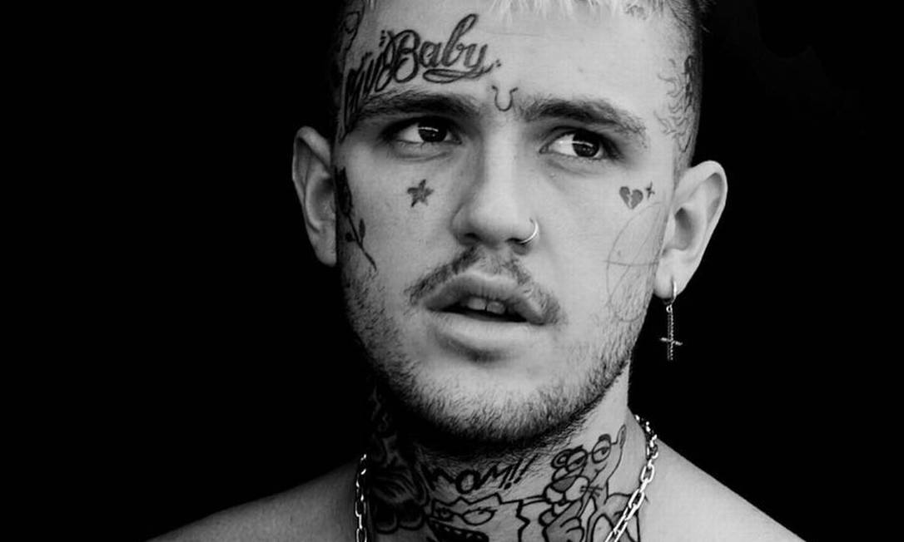
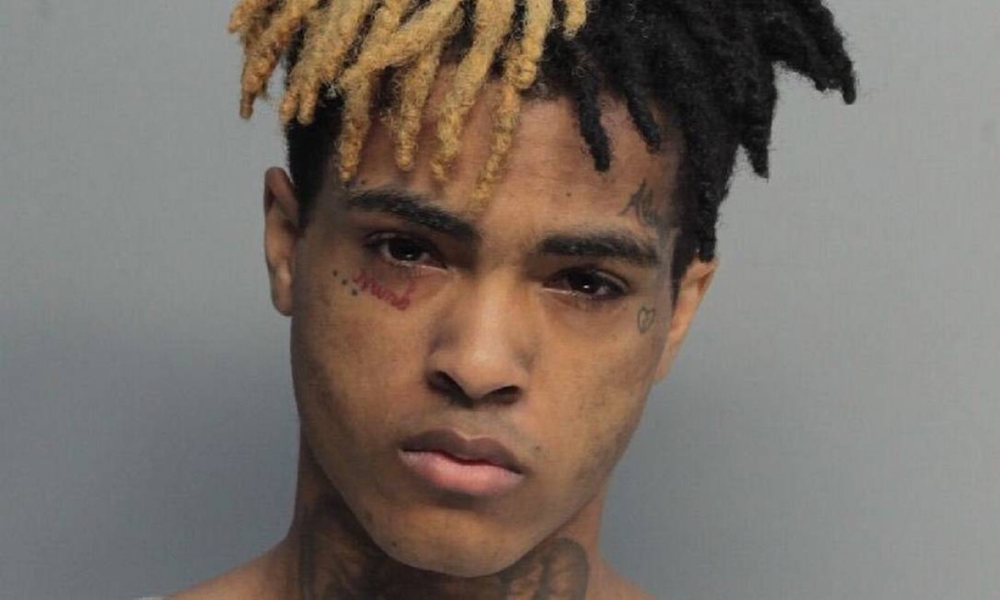

...
...
A "Era de Ouro do SoundCloud" resume o ápice desse ecossistema que redefiniu a música e a cultura pop entre 2015 e 2019, consolidando-se como a maior força disruptiva da internet moderna. Ao unir o SoundCloud Rap, as vertentes eletrônicas inovadoras e o Lo-fi em um ambiente de compartilhamento direto e gratuito, a plataforma transformou quartos de adolescentes em estúdios globais e descentralizou o poder da indústria fonográfica. Esse caldeirão cultural não apenas revelou superestrelas como XXXTentacion, Billie Eilish e Juice WRLD, mas também democratizou o sucesso social ao permitir que jovens periféricos e independentes ditassem as tendências mundiais sem o filtro de gravadoras. O movimento encolheu o formato das músicas, popularizou a estética rockstar digital e moldou os algoritmos curtos do TikTok e do Spotify, deixando um legado eterno onde a conexão humana direta e o Wi-Fi venceram as estruturas milionárias do mercado.
O SoundCloud funcionou como o berço da democratização social na música ao destruir as barreiras financeiras e geográficas que historicamente barravam jovens de periferias e minorias no mercado fonográfico. Para lançar uma carreira global, não era mais necessário estúdios caros, contatos na indústria ou investimentos de grandes gravadoras; bastava um celular, um fone de ouvido e conexão com a internet. Essa acessibilidade permitiu que narrativas marginalizadas, realidades suburbanas e vivências cruas de jovens de todo o mundo fossem ouvidas sem filtros ou censura comercial, criando comunidades globais baseadas na identificação direta. Ao dar voz e autonomia financeira a uma geração de criadores independentes que a indústria tradicional ignorava, a plataforma descentralizou o poder e provou que o talento periférico digitalizado podia ditar as regras da cultura pop mundial.
A Era SoundCloud revolucionou a distribuição musical ao consolidar o poder do compartilhamento direto, permitindo que artistas fizessem o upload instantâneo de faixas sem intermediários ou custos. Essa autonomia transformou ouvintes em promotores ativos por meio de reposts, comentários diretamente na linha do tempo do áudio e redes de compartilhamento orgânico que geravam viralização imediata. Ao eliminar o filtro tradicional de gravadoras, radialistas e curadores, a plataforma descentralizou o sucesso e permitiu que comunidades digitais hiperconectadas decidissem, sozinhas, o que iria estourar. Esse modelo de engajamento direto e descentralizado redefiniu o marketing da música moderna, servindo de base para o algoritmo de recomendação do TikTok e para a cultura de lançamentos independentes que molda a indústria atual.
Embora tenha abrigado diversos gêneros, o SoundCloud ficou eternamente marcado pelo nascimento de uma vertente crua, distorcida e extremamente expressiva do Hip-Hop: o SoundCloud Rap (ou Lo-Fi Mumble Rap). Artistas como XXXTentacion, Juice WRLD, Lil Peep, Playboi Carti, Ski Mask the Slump God e Lil Pump transformaram a plataforma em seu palco principal. Eles trouxeram uma estética única: Estética Visual: Cabelos coloridos, tatuagens faciais, roupas de grife misturadas com referências punk e anime. Sonoridade Distorcida: Graves estourados (808s), batidas feitas no FL Studio e vocais carregados de melancolia ou agressividade. Temáticas Cruas: Letras profundas sobre saúde mental, depressão, vulnerabilidade e o uso de substâncias, conectando-se diretamente com a Geração Z.
Entre 2015 e 2019, o SoundCloud também revolucionou a música eletrônica e o Lo-fi ao democratizar a produção de nicho fora do circuito comercial [Aesthetics Wiki]. Produtores caseiros fundiram o Future Bass, o Synthwave e o Trap, gerando vertentes eletrônicas maximalistas com estéticas visuais inspiradas em animes e na cultura gamer. Paralelamente, o movimento Lo-Fi Hip Hop explodiu na plataforma através de batidas instrumentais calmas, texturas de vinil e samples de jazz enevoados, criando a trilha sonora definitiva para estudo e relaxamento na internet. Essa transição para o mainstream foi imediata: a estética eletrônica do SoundCloud moldou o pop de grandes DJs e influenciou o Hyperpop, enquanto o Lo-fi gerou canais de transmissão 24 horas no YouTube que acumulam bilhões de reproduções e dão tom às playlists de foco no Spotify. O ecossistema provou que sons antes considerados amadores ou puramente digitais tinham força para pautar a atmosfera sonora do cotidiano moderno.
Entre 2015 e 2019, o SoundCloud Rap implodiu a indústria musical quando jovens com laptops e internet ignoraram as gravadoras para criar um som cru, com graves estourados e samples de rock emo. Nomes como XXXTentacion, Lil Peep e Juice WRLD transformaram traumas reais em hinos geracionais e forçaram o mercado a disputar contratos milionários com artistas independentes. Ao estourar no mainstream com hits como "XO Tour Llif3", de Lil Uzi Vert, o movimento redesenhou o pop moderno: encolheu as músicas para dois minutos para alimentar algoritmos — formato herdado pelo TikTok —, quebrou as barreiras entre Rap e Rock e abriu portas para a vulnerabilidade de artistas como Billie Eilish. O ecossistema original enfraqueceu após a morte precoce de seus pilares, mas provou que um adolescente com Wi-Fi pode vencer os maiores estúdios do mundo.

Gustav Elijah Åhr, eternizado como Lil Peep, foi a figura mais emblemática na fusão definitiva entre o rock alternativo dos anos 2000 e o trap moderno. Em uma época em que o rap e o rock pareciam caminhar em direções opostas, Peep trancou-se em seu quarto com um microfone barato e o software GarageBand para provar o contrário. Ele não apenas criou um som; ele ditou a moda de uma subcultura digital inteira. Suas unhas pintadas, cabelos descoloridos e a icônica tatuagem "Crybaby" no rosto desafiaram as normas estéticas tradicionais do hip-hop, abrindo espaço para a androginia e para a vulnerabilidade extrema na música urbana.Musicalmente, Peep era um gênio dos samples. Sob as produções de coletivos como GothBoiClique (GBC), ele resgatava riffs de guitarra melancólicos de bandas de midwest emo, post-hardcore e grunge — como Brand New, Radiohead, Underoath e The Microphones — e os sobrepunha a batidas arrastadas de caixas de ritmo 808. Faixas como "Star Shopping" (gravada em seu quarto de forma totalmente independente) e as músicas da mixtape Hellboy tornaram-se hinos de uma juventude que se sentia incompreendida e deslocada. Suas letras falavam sem filtros sobre a solidão profunda, a automutilação e o uso abusivo de substâncias para mascarar a dor. Sua morte trágica em novembro de 2017, por overdose acidental aos 21 anos, interrompeu a turnê de seu álbum de estreia, Come Over When You're Sober, Pt. 1. Peep partiu exatamente no momento em que o mercado tradicional começava a aceitar que o underground que ele havia moldado era o novo mainstream.

Nenhum artista da era SoundCloud canalizou o caos, a raiva juvenil e o subsequente desejo de redenção de forma tão visceral quanto Jahseh Dwayne Ricardo Onfroy, o XXXTentacion. Surgido da violenta e efervescente cena subterrânea da Flórida, X quebrou as estruturas da indústria musical a partir de 2015 com "Look at Me!". A faixa contava com uma produção intencionalmente estourada, distorcida e agressiva que criava uma atmosfera de mosh pit digital. Esse som cru, muitas vezes classificado como SoundCloud Rap ou Lo-Fi Trap, era o reflexo de uma mente turbulenta e de uma vida marcada por traumas institucionais e pessoais.O que diferenciou XXXTentacion de seus contemporâneos, no entanto, não foi apenas a agressividade inicial, mas uma versatilidade artística assustadora e quase genial. Ele conseguia transitar de berros ensurdecedores influenciados pelo heavy metal e pelo punk para composições acústicas no violão, dedilhadas de forma íntima e dolorosa. Seu álbum de estreia oficial, 17, foi aclamado por lendas da música e chocou o público por ser um diário aberto sobre depressão e ideação suicida. Canções posteriores, como "SAD!", "Changes" e "Moonlight", trouxeram melodias pop sofisticadas misturadas ao R&B e ao indie rock. X usava sua plataforma para documentar sua própria evolução mental e espiritual, pregando mensagens de cura para seus fãs em seus últimos meses de vida. Em junho de 2018, aos 20 anos de idade, ele foi assassinado durante um assalto na Flórida. Sua morte congelou o movimento em choque, deixando um catálogo musical que até hoje figura entre os mais reproduzidos da história das plataformas digitais.
Em 2017, ele lançou de forma despretensiosa a faixa "Lucid Dreams" no SoundCloud. A música trazia um sample melancólico de "Shape of My Heart", do cantor Sting, e catapultou Juice diretamente para o topo das paradas globais, tornando-se posteriormente uma das músicas mais ouvidas da era do streaming. Suas letras focavam na angústia pós-término, na dependência química de medicamentos controlados como ansiolíticos e xaropes à base de codeína, e no medo constante da própria mortalidade. Em sua emblemática canção "Legends", escrita para homenagear os recém-falecidos Peep e X, Juice proferiu a frase profética: "O que é a era dos 27? Nós nem estamos passando dos 21". Infelizmente, em dezembro de 2019, apenas alguns dias após completar 21 anos, Juice WRLD sofreu uma overdose acidental no aeroporto de Chicago. Seu falecimento marcou o fechamento definitivo de um ciclo trágico e genial, deixando milhares de músicas inéditas gravadas em seus arquivos e um vazio irreparável no coração da cultura pop.
O fim da "Era SoundCloud" marcou o encerramento de um dos períodos mais libertários e trágicos da história da música digital, resultado de uma tempestade perfeita entre perdas humanas e a ganância da indústria. O movimento perdeu sua alma criativa de forma devastadora com as mortes consecutivas de seus três maiores pilares: Lil Peep em 2017, XXXTentacion em 2018 e Juice WRLD em 2019. Sem os seus líderes para ditar os rumos estéticos, a cena ficou vulnerável à agressiva "industrialização" das grandes gravadoras, que passaram a contratar qualquer jovem que viralizasse na plataforma. Isso gerou uma saturação imediata no mercado, limpando o som cru, distorcido e repleto de samples ilegais de rock para transformá-lo em um produto de rádio genérico, lotado de clones estéticos de cabelos coloridos e tatuagens no rosto. Para sepultar o movimento, o próprio SoundCloud enfrentou crises financeiras e endureceu suas regras de direitos autorais, destruindo a cultura de remixes caseiros, enquanto o público e os novos artistas migraram para o TikTok e o Spotify em busca de algoritmos de consumo rápido. Assim, o SoundCloud deixou de ser o epicentro de uma revolução cultural orgânica e jovem para se tornar apenas mais uma engrenagem engolida pelo Mainstream.